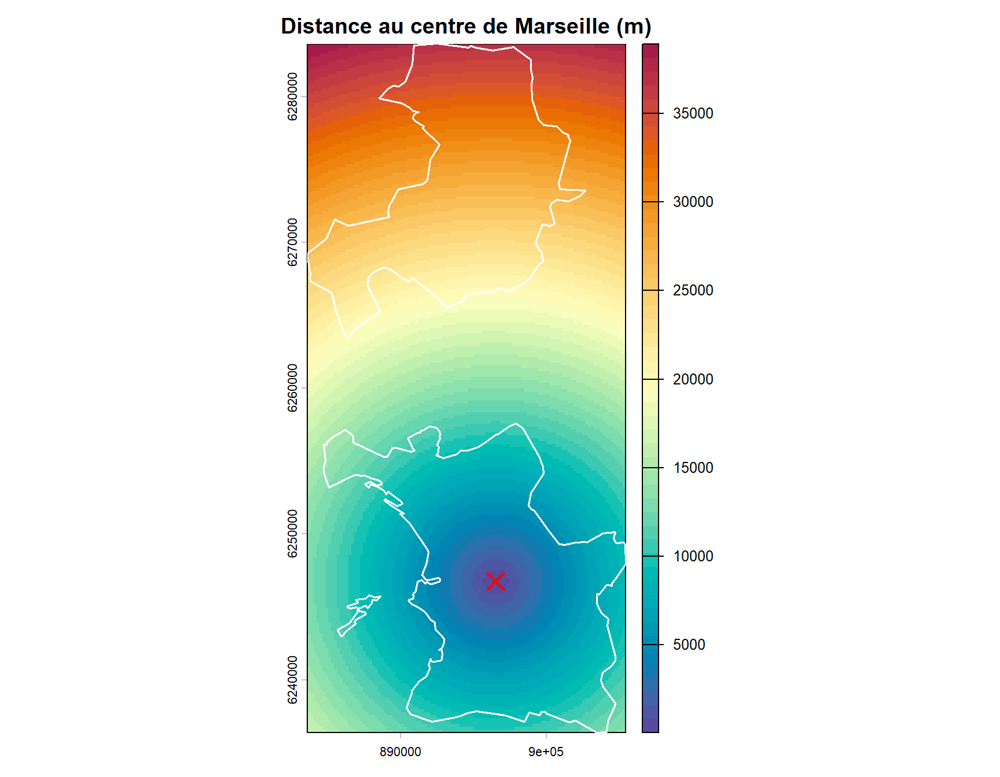

Voir le code
library(sf)
library(terra)
library(mapsf)Cette page présente les géotraitements raster : création d’un raster de distance au centre-ville et analyse de la relation entre distance et revenu médian.
communes.gpkg ──► Centroïde Marseille ──┐
communes.gpkg ──► Emprise raster (200m) ─┤──► Raster distance ──► dist_marseille
│
filosofi.gpkg ──► Extraction par carreau─┘──► distance par carreau
──► Régression revenu ~ distancelibrary(sf)
library(terra)
library(mapsf)communes <- st_read("data/communes.gpkg", quiet = TRUE)
filosofi <- st_read("data/filosofi.gpkg", quiet = TRUE)
cat("Communes :", nrow(communes), "\n")Communes : 2 cat("Carreaux :", nrow(filosofi), "\n")Carreaux : 5681 # Centroïde de Marseille
marseille <- communes[communes$nom_officiel == "Marseille", ]
centre_m <- st_centroid(marseille)
# Raster sur l'emprise des deux communes, résolution 200m (= carreaux Filosofi)
r_base <- rast(vect(communes), res = 200)
# Calcul de la distance au centroïde (en mètres)
dist_r <- distance(r_base, vect(centre_m))
names(dist_r) <- "distance_m"
# Affichage
plot(dist_r, main = "Distance au centre de Marseille (m)",
col = rev(hcl.colors(50, "Spectral")))
plot(st_geometry(communes), add = TRUE, border = "white", lwd = 1.5)
plot(st_geometry(centre_m), add = TRUE, pch = 4, cex = 2, col = "red", lwd = 2)
legend("bottomright", legend = "Centre Marseille", pch = 4, col = "red", bty = "n")
# Centroïdes des carreaux
filosofi_v <- vect(filosofi)
filosofi$dist_m <- extract(dist_r, filosofi_v, fun = mean, na.rm = TRUE, ID = FALSE)[, 1]
cat("Distance min :", round(min(filosofi$dist_m, na.rm = TRUE) / 1000, 1), "km\n")Distance min : 0.1 kmcat("Distance max :", round(max(filosofi$dist_m, na.rm = TRUE) / 1000, 1), "km\n")Distance max : 36.6 km# Retirer les valeurs manquantes
df <- st_drop_geometry(filosofi)
df <- df[!is.na(df$dist_m) & !is.na(df$ind_snv), ]
# Nuage de points
plot(
df$dist_m / 1000,
df$ind_snv,
xlab = "Distance au centre de Marseille (km)",
ylab = "Revenu médian (€/UC)",
main = "Revenu médian vs distance au centre",
pch = 20,
col = rgb(0.2, 0.4, 0.8, 0.2),
cex = 0.5
)
# Droite de régression
mod <- lm(ind_snv ~ dist_m, data = df)
abline(mod, col = "red", lwd = 2)
r2 <- round(summary(mod)$r.squared, 3)
legend("topright",
legend = paste0("R² = ", r2, "\npente = ",
round(coef(mod)[2] * 1000, 1), " €/km"),
bty = "n", col = "red", lty = 1)
filosofi$zone_dist <- cut(
filosofi$dist_m,
breaks = c(0, 2000, 5000, 10000, Inf),
labels = c("0-2 km (hyper-centre)",
"2-5 km (centre élargi)",
"5-10 km (péri-urbain proche)",
"> 10 km (périphérie)")
)
mf_map(communes, col = "grey95", border = "grey50")
mf_map(
filosofi,
type = "typo",
var = "zone_dist",
pal = c("#d73027", "#fc8d59", "#fee090", "#91bfdb"),
border = NA,
leg_title = "Zone de distance",
add = TRUE
)
mf_map(communes, col = NA, border = "black", lwd = 1.5, add = TRUE)
mf_title("Zonage de distance au centre — Marseille")
mf_credits("Sources : INSEE Filosofi 2021 | IGN Admin Express 2025 | terra")